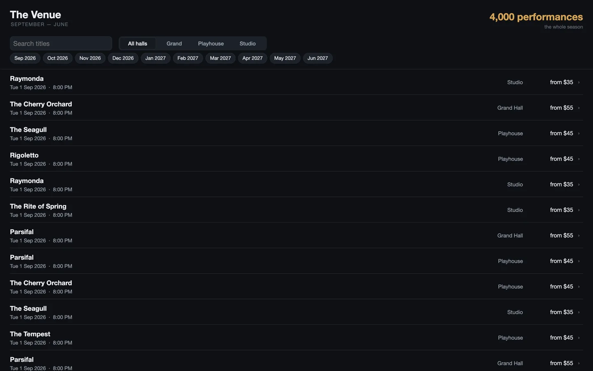
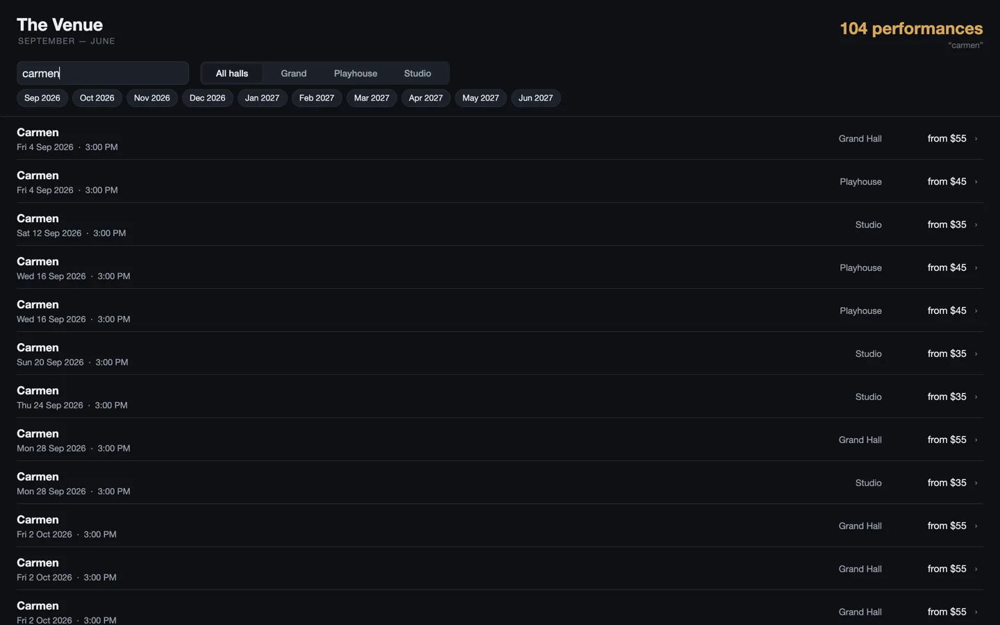
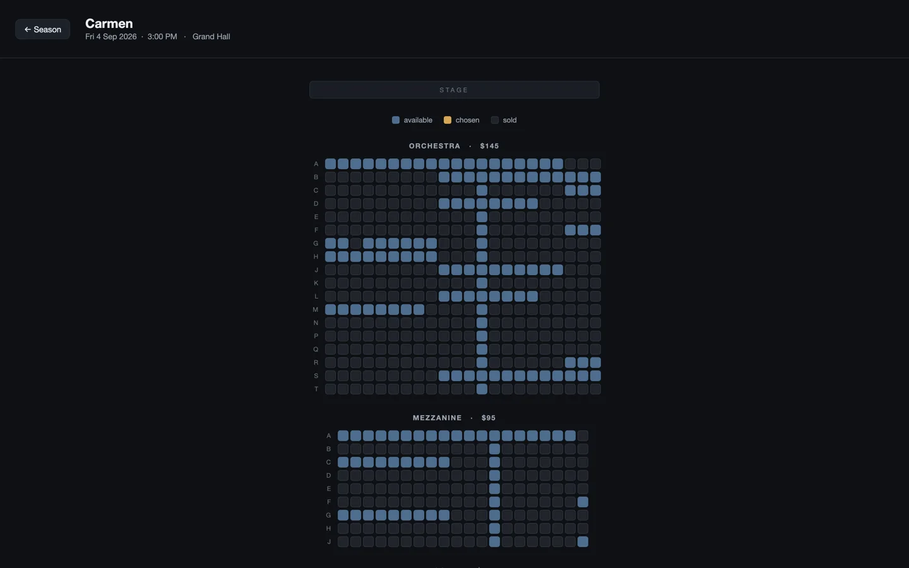
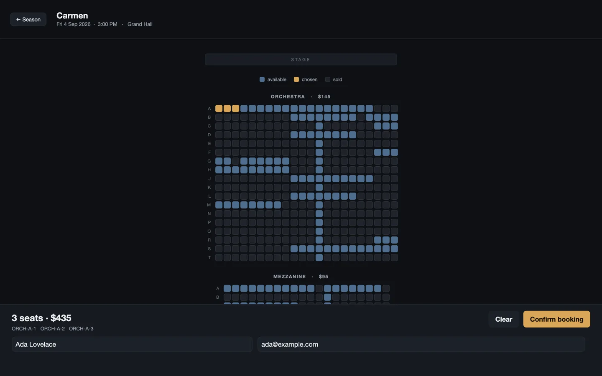

A seat-booking app built from a brief alone, in a language with no training corpus, by an agent that had never seen the repository before. Scored against a hidden acceptance it never saw.
| Tree | Fresh git clone at 11fddc1, npm install + build, nothing else staged |
|---|---|
| Given | evals/apps/venue/brief.md and api/ only. Reference solution and acceptance script verified absent from the tree |
| Skill | .claude/skills/declare/SKILL.md auto-discovered, as it would be for anyone who cloned the repo. This measures skill + repo, not repo alone |
| Service | Local deterministic fixture on :8310 — given, never written by the agent |
| Prompt | Distro framing only: “you have just downloaded this, the repo is the only source of truth, start at README.md, do not assume the resemblances hold.” No hints about known traps |
A single 837-line file. The season arrives once into a DataSource; a derived
Dataset is the projection, so a keystroke narrows 4,000 rows with no round trip.
The list is one row template with virtualize = true — 4,000 records, ~14 views.
Picking a performance writes app.location, so a hall is a deep link and the back
button works with nothing written for it. An EventStream marks seats gone live,
including pulling one out of the selection if it is taken while chosen.
It also invented a third failure sentence the brief did not specify — for a seat taken by the live feed while already in someone's selection — reasoning that silently editing the selection was worse. That is the brief's silence being filled rather than defaulted to nothing, which is what the intake doctrine predicts and does not always get.


toLocaleString, so the
specified copy cannot vary by locale.

3 seats · $435 with the true
section-priced total, the chosen seat ids listed, and the form present exactly while something is chosen.
One sprung scalar drives both the panel's rise and the room's height, so nothing jumps.The hidden acceptance drives twelve phases with real input. This run reached phase 9 — season loads, is listed, search narrows it, a performance opens its hall, the hall lays out as a room, a seat can be chosen, a second adds its own price, a chosen seat can be unchosen, and booking asks for a name and an email.
Read the 9/12 with care. Three separate defects in my acceptance script surfaced while scoring this run, all now fixed: it pressed any text containing a verb (it once pressed a heading reading “CONFIRMED”); it counted form fields the instant it asked for them, catching a panel still springing into place and reporting the fields absent; and it pressed by screen position, which selected Clear where that sat beside Confirm booking — emptying the selection and taking the form away with it.
The remaining phase-9 failure is not isolated. It may be the app or it may still be the instrument. It is recorded here as unresolved rather than scored against the program.
Every claim below was re-tested here against 11fddc1 with a minimal reproduction.
Claims that did not survive that test are marked as such and carry no recommendation.
| # | Finding | Validation | Recommendation |
|---|---|---|---|
| V1 | A DataSource whose URL is set in the same handler that fetches it requests the OLD address.
Measured directly: after the handler set the address, the settled url read
…/api/performances while the resource timeline showed the request went to
…/api/halls. Compounding it, DataSource.url's own documentation says
“change a dependency and the next fetch() hits the new URL,” which is exactly what
it does not do from inside a handler. |
Confirmed Independently reproduced. Also found by the Cadence run, separately. |
Fix bug Two agents, two apps, one round. Candidate fix: have fetch() flush pending writes before reading url/body. |
| V2 | A script constant cannot be used in a bare value slot.
tint: Color = SEAT_FREE is refused with “not a CSS color name”, while the same constant
works inside any { }. The diagnostic is clear; the asymmetry is stated nowhere. |
Confirmed | Docs update One clause in §2's value-slot table. |
| V3 | The value-slot table does not cover bare array slots. listenTo = ["a","b"]
compiles; so does the braced form. §2 documents three forms and this is a fourth, so the author guesses. |
Confirmed | Docs update |
| V4 | A virtualized list re-pins its scroll anchor across a data change, so a single
scrollY = 0 after a search is undone. Real, correct, and invisible — documented only as a
comment inside apps/tracker/tracker.declare. |
Not tested Plausible and specific; not independently reproduced here. |
Docs update Belongs in the scale chapter, where someone writing a searchable list will meet it. |
| V5 | DECLARE7001 on a regex inside a script helper names a fix that isn't one.
The message advises reading through the parameter (s.someAttr) or “doing the work in a method” —
but the parameter is a string, and a method called from a constraint is analysed identically, so
following the advice lands in the same place. |
Not reproduced Not isolated to a minimal case in the time available. |
Investigate If confirmed, a diagnostic whose named fix does not work is a bug by this project's own standard. |
| V6 | An unfilled full-frame View silently absorbed every click.
Reported by the agent as a platform defect. |
Rejecteddeclare.md §8 states this plainly — every view takes presses unless visible = false or pointerEvents = "none", and a transparent view is “the natural press-catcher”. Declaration order is z-order. The app declared an empty container in front of its content. |
Ignore Documented behaviour. The agent's own layering mistake. |
| V7 | Segmented does not self-size — stated in the component's source, absent from
the control table in the guide chapter where a reader would look. |
Not tested | Docs update Low severity. |
| V8 | The formatter re-indents the closing brace of a top-level script { }
inconsistently with its own placement of the opening line. |
Not tested | Fix bug Cosmetic, but the formatter defines the canon, so it should agree with itself. |
Four compile iterations total, and by the agent's account the language itself barely fought it — the expensive part was behaviour, found by driving. Its own summary of the three defects it hit: “invisible below rung 5.” That is the verification ladder's own argument, arrived at independently by someone who had not read it.
The single most valuable thing it produced is V1, because the Cadence run found the same defect the same day from a different direction. That clears the two-independent-sightings bar in one round.